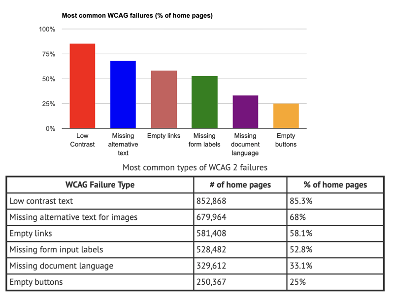

Bienvenue sur HandiA11y
HandiA11y est un site spécialisé pour découvrir les bases de l'accessibilité web et les différents
handicaps à prendre
en compte.
Pourquoi A11y et pas A11é ?
A11é est une abréviation pour accessibilité où 11 représente le nombre
de lettres entre le a et le é du
mot
accessibilité. Cette même abbréviation dans sa version anglaise est plus jolie à l'oreille : A11Y
Quelle est l'origine du mot HANDICAP ?
Le mot handicap trouve son origine dans l'anglais médiéval. Il est dérivé de l'expression hand
in cap,
qui signifie main
dans le chapeau. À l'époque, cette expression était utilisée dans les jeux de hasard pour indiquer
qu'un
joueur était
désavantagé ou handicapé par rapport aux autres joueurs. Au fil du temps, le terme a été adopté dans
d'autres contextes
pour décrire une situation où une personne est désavantagée ou limitée dans ses capacités physiques,
mentales ou
sociales.
Le WCAG et les 4 principes A11y
Perceptible
Les informations et les composants de l'interface utilisateur doivent être perceptibles pour tous les
utilisateurs, y
compris ceux ayant des limitations sensorielles.
Utilisable
Les composants de l'interface utilisateur doivent être utilisables par tous les utilisateurs, y
compris ceux ayant
des
limitations physiques ou cognitives.
Compréhensible
Les informations et les opérations doivent être compréhensibles pour tous les utilisateurs, y compris
ceux ayant des
limitations cognitives.
Robuste
Le contenu doit être robuste et fonctionnel sur différentes plateformes, y compris les technologies
d'assistance, pour
tous les utilisateurs.
Les critères WCAG 2.1 sous forme de
tableau
| Principes |
Critères |
Correspondances |
Objectifs |
| Perceptible |
1.1 |
Alternatives textuelles |
Fournir des alternatives textuelles pour tout contenu non textuel afin qu'il puisse être
modifié dans d'autres formes
comme les gros caractères, le braille, la parole, les symboles ou un langage plus simple.
|
| 1.2 |
Médias temporels |
Fournir des alternatives aux médias temporels. |
| 1.3 |
Adaptable |
Créez du contenu qui peut être présenté de différentes manières (par exemple une mise en
page plus simple) sans perdre
d'informations ou de structure. |
| 1.4 |
Distinguable |
Facilitez la visualisation et l'écoute du contenu par les utilisateurs, notamment en
séparant le premier plan de
l'arrière-plan. |
| Utilisable |
2.1 |
Accessible au clavier |
Rendre toutes les fonctionnalités disponibles à partir d'un clavier. |
| 2.2 |
Suffisamment de temps |
Donnez aux utilisateurs suffisamment de temps pour lire et utiliser le contenu. |
| 2.3 |
Convulsions et réactions physiques |
Concevoir des contenus qui ne provoquent pas de convulsions ou des réactions physiques comme
des crises épileptiques
(zones clignotantes et flashs). |
| 2.4 |
Navigable |
Fournir des moyens d'aider les utilisateurs à naviguer, à trouver du contenu et à déterminer
où ils se trouvent. |
| 2.5 |
Entrées ciblables |
Faciliter l'utilisation des fonctionnalités par les utilisateurs grâce à diverses entrées
au-delà du clavier. |
| Compréhensible |
3.1 |
Lisibilité du texte et de l'interface |
Rendre le contenu du texte lisible et compréhensible. |
| 3.2 |
Prévisible |
Faites en sorte que les pages Web s'affichent et fonctionnent de manière prévisible. |
| 3.3 |
Assistance à la saisie |
Aider les utilisateurs à éviter et à corriger les erreurs. |
| Robuste |
4.1 |
Compatible |
Optimiser la compatibilité avec les agents utilisateurs actuels et futurs, y compris les
technologies d'assistance. |
Les 3 niveaux de conformité WCAG 2.1
| Niveaux |
Description |
| A |
Accessibilité de base, répondant aux besoins essentiels des utilisateurs handicapés ou en
situation de handicap |
| AA |
Accessibilité avancée, garantissant une meilleure expérience pour la majorité des
utilisateurs handicapés ou en
situation de handicap |
| AAA |
Accessibilité maximale, offrant une expérience optimale pour tous les utilisateurs, y
compris les utilisateurs
handicapés |
Vous pouvez tester la lecture des 2 tableaux avec JAWS ou NVDA pour voir
WCAG 2.1 en VO

lien vers l'explication du graphique et du tableau (en
anglais)